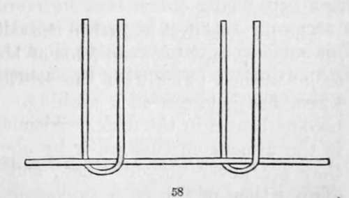

Section II. Chloride Of Silver
Description
This section is from the book "A Manual Of Photography", by Robert Hunt. Also available from Amazon: A Manual of Photography.
Section II. Chloride Of Silver
This is one of the most important salts employed in photography ; it therefore demands especial attention.
Muriated Papers, as they are termed, are formed by producing a chloride of silver on their surface, by washing the paper with the solution of chloride of sodium (muriate of soda), or any other chloride, and when the paper is dry, with a solution of nitrate of silver.
It is a very instructive practice to prepare small quantities of solutions of common salt and nitrate of silver of different strengths, to cover slips of paper with them in various ways, and then to expose them altogether to the same radiations. A curious variety in the degrees of sensibility, and in the intensity of colour, will be detected, showing the importance of a very close attention to proportions, and also to the mode of manipulating.
A knowledge of these preliminary but important points having been obtained, the preparation of the paper should be proceeded with; and the following method is recommended :—
Taking some flat deal boards, perfectly clean, pin upon them, by their four corners, the paper to be prepared; observing the two sides of the paper, and selecting that side to receive the preparation which presents the hardest and most uniform surface. Then, dipping one of the sponge brushes into the solution of chloride of sodium, a sufficient quantity is taken up by it to moisten the surface of the paper without any hard rubbing; and this is to be applied with great regularity. The papers being " salted," are allowed to dry. A great number of these may be prepared at a time, and kept in a portfolio for use. To render these sensitive, the papers being pinned on the boards, or carefully laid upon folds of white blotting paper, are to be washed over with the nitrate of silver, applied by means of a camel-hair pencil, observing the instructions previously given as to the method of moving the brush upon the paper. After the first wash is applied, the paper is to be dried, and then subjected to a second application of the silver solution. Thus prepared, it will be sufficiently sensitive for all purposes of copying by application. The second wash is applied for the purpose of insuring an excess of the nitrate of silver in combination, or, more properly speaking, mixed with the chloride. Mr. Cooper, with a view to the production of a uniform paper, recommends that it be soaked for a considerable length of time in the saline wash, and, after it is dried, that the sheet should be dipped into the silver solution ; while the operator moves over its surface a glass rod held in two bent pieces of glass, as in fig. 58; the object of which is to remove the .-mall air-bubbles forming on the surface of the paper, which protect it from the action of the fluid. This process, however well it may answer in preparing paper for copying engravings, will not yield paper sufficiently sensitive for camera purposes; and it is objectionable on the score of economy, as a larger quantity of the silver solution is required to decompose the common salt than in the process previously described.
The young photographer would find it interesting to study the more striking peculiarities of a few of the preliminary washes, such, indeed, as those noticed in the scientific division. It will be found that nearly every variety of paper exposed to the full action of the solar beams will pass through various shades of brown, and become at last of a deep olive colour: it must therefore be understood that the process of darkening is in all cases stopped short of this point. Remembering this, it will be found that very peculiar and often beautiful tints are produced by the chloride of barium, the hydro-chloride of ammonia, and some of the organic acids.
Papers prepared with the chloride of sodium have, however, been more extensively used than any others for positive pictures, owing to the ease with which this material is always to be procured; and for most purposes it answers as well as any other, but it does not produce the most sensitive photographic surface.
The proportions in which this salt has been used are exceedingly various; in general, the solutions have been made too strong; but several chemists have recommended washes that are as much too weak. For different uses, solutions of various qualities should be employed. It will be found well in practice to keep papers of three orders of sensitiveness prepared; the proportions of salt and silver for each being as follows:—
A paper may be prepared with the chloride as follows:—
Chloride of sodium, thirty grains to an ounce of water.
Nitrate of silver, one hundred and twenty grains to an ounce of distilled water.
The paper is first soaked in the saline solution, and after being carefully pressed between folds of blotting paper and dried, it is to be washed twice with the solution of silver, drying it by a warm fire between each washing. This paper is very liable to become brown in the dark. Although images may be obtained in the camera on this paper by about half an hour's exposure, they are never very distinct., and may be regarded as rather curious than useful.
A less sensitive paper for copies of engravings—botanical or entomological specimens, should have the following proportion:—
Chloride of sodium, twenty-five grains to an ounce of water. Nitrate of silver, ninty-nine grains to an ounce of distilled water.
And a yet more common sensitive paper, for copying lace-work, feathers, patterns of watch-work, etc., may he thus prepared at less expense :—
Chloride of sodium, twenty grains to an ounce of water.
Nitrate of silver, sixty grains to an ounce of distilled water.
Applied as above directed.
This paper keeps tolerably well, and, if carefully prepared, may always be depended upon for darkening equally.
Continue to: